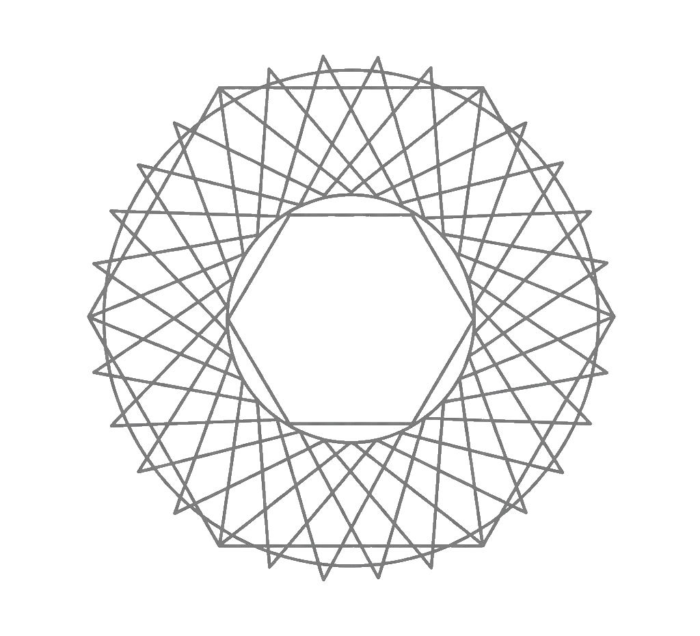
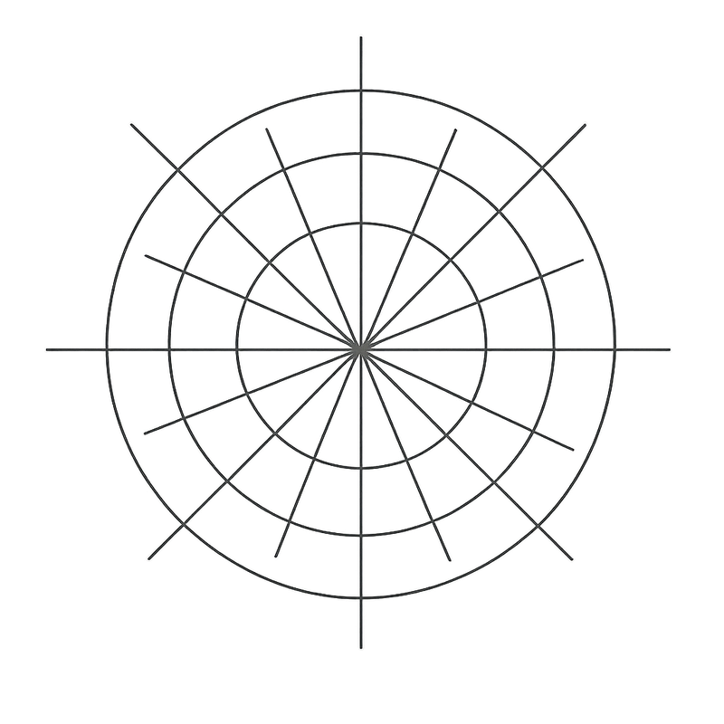
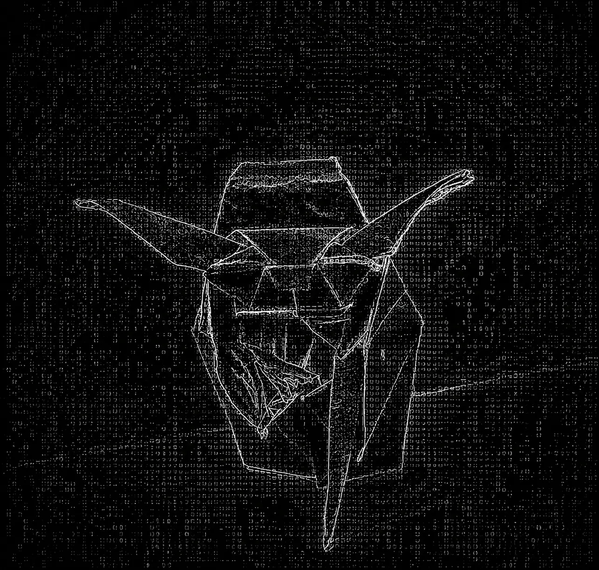

IIT Madras · 3X Hackathon Winner · CGPA 9.02

Core Philosophy
I am a third-year undergraduate student in the IIT Madras BS program in Data Science. I enjoy building applied ML projects, exploring ideas from first principles, and understanding how technology and human behavior interact.
I'm particularly curious about human cognition, decision-making, and the principles that shape how people interact with technology.
AI-driven cognitive wellness platform leveraging NLP and Deep Learning for real-time journaling bias analysis. Features a RAG-enhanced Socratic assistant, custom Python therapist scrapers, Coherence caching for sub-100ms latency, and Google OAuth via Supabase.
Launch Site ↗Socratic Study Engine deploying Bayesian Knowledge Tracing loops, prerequisite DAG structures, and continuous metacognitive optimization agents.
Launch Site ↗Multi-agent deployment computing structural compatibility balances and simulated performance matrices from behavioral activity vectors using GitHub data.
Launch Simulator ↗A research paper exploring a novel multi-agent algorithm inspired by Vedic astrology principles to optimize development team composition and hiring compatibility using behavioral metadata.
Investigation into keystroke dynamics as a behavioural biometric. Collects and analyses typing patterns (dwell time, flight time, latency) to explore identity verification and cognitive state inference.
A remote sensing study analysing post-wildfire vegetation recovery using satellite imagery and spectral indices (NDVI, NBR). Identifies ecological recovery trajectories and burn scar extents.
A reader-friendly adaptation of the TypeState research project, exploring how the way you type (dwell time, flight time, and latency) can serve as a unique behavioural fingerprint for cognitive monitoring.
An analysis of the 'Apple' mythos - from the wax-coated fruits in our markets to the stagnant innovation of the tech giant in 2026.
Structuring non-traditional team balance matrix models combining engineering sentiment signals with chronological cycles.
Specialized training in functional algorithmic mathematics, deep inference, and structural data system setups.
Graduated with coverage of advanced web system architecture builds and core algorithm analysis paths.
Verified expertise modeling network virtualization arrays, multi-node setups, and scaling patterns.
Verified expertise handling structural joins, processing database partition windows, and query path optimization loops.
Verified data processing, statistical analysis, and predictive modeling capabilities in Python and SQL.
Workshop certification covering Google Cloud Platform core services : Compute Engine, Cloud Storage, BigQuery, and Vertex AI.
Secured 2nd Runner Up standing globally in the Spring 2026 Hackathon loop for structural LLM application design.
Awarded top engineering platform prize across institutional rapid-prototyping tracks.
Awarded structural podium placement inside the competitive technical computing showcase arena.